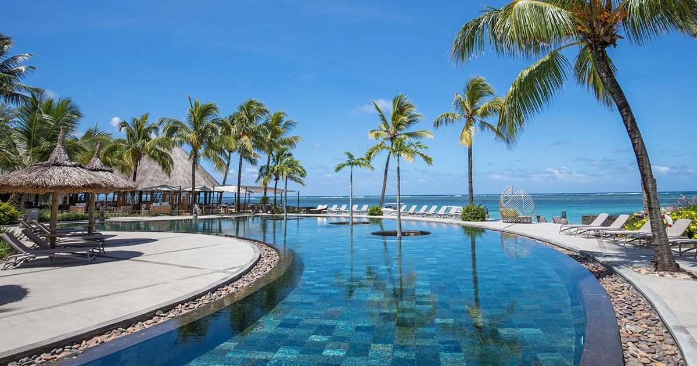

Palmarès international · Données propriétaires LMHS
Les 8 meilleurs hôtels avec plage à l'île Maurice en 2026
Une péninsule privée à Poste de Flacq, le seul spa sur pilotis de l'île, une île privée
accessible en bateau. Huit adresses classées sur la qualité réelle de leur plage, avec le
défaut de chacune et une idée reçue à corriger sur les côtes mauriciennes.
Par Lucas Lecoq, rédacteur en chef✺Publié le 29 juillet 2026✺17 min de lecture
La plage de Belle Mare, sur la côte est : c'est là que se concentrent la moitié des adresses de ce classement. Photo Arne Müseler, CC BY-SA 3.0 DE.
TL;DR : l'essentielLe podium des plages mauriciennes
One&Only Le Saint Géran, Poste de Flacq, 9,4/10 :
une péninsule privée, la plus belle plage de l'île, Indice Plage 5/5.
Four Seasons Anahita, Beau Champ, 9,1/10 :
rouvert en novembre 2025, villas à piscine et le seul spa sur pilotis de Maurice.
Constance Belle Mare Plage, 8,8/10 :
deux kilomètres de sable blanc et le meilleur rapport qualité-prix du classement.
Une idée reçue à corriger. On lit partout que la côte est
mauricienne serait la plus abritée. C'est l'inverse : elle est la plus directement exposée aux
alizés de sud-est. Si elle concentre les grands resorts de plage, c'est pour la longueur de
son sable et la largeur de son lagon, pas pour son calme. Le lagon le plus lisse est à
l'ouest.
Notre méthode et l'Indice Plage
Ce classement applique la grille LMHS Destination, notée sur 10, celle de
nos palmarès par destination : rapport qualité-prix, critère thématique, localisation, service,
avis vérifiés. Le critère thématique retenu ici est la plage, doublé d'un
indicateur propriétaire, l'Indice Plage sur 5 : longueur et largeur de sable,
qualité du lagon, exposition au vent, accès privatif, densité de transats.
Aucun de ces huit établissements n'a été visité par la rédaction.
Le classement repose sur les données publiées par les groupes hôteliers, les guides et les avis
vérifiés, comme notre sélection sarde.
Nos notes sur 10 ne se convertissent donc pas avec les notes sur 20 du
Protocole LMHS, qui suppose une nuit payée et une visite
anonyme, et que nous réservons à la France.
Le tableau : 8 adresses, scores et tarifs
Rang
Établissement
Côte
Score LMHS
Indice Plage
Nuit dès
Idéal pour
01
One&Only Le Saint Géran
Est
9,4/10
5/5
750 €
Luxe absolu, lune de miel
02
Four Seasons Anahita
Est
9,1/10
4,5/5
800 €
Villas privées, familles
03
Constance Belle Mare Plage
Est
8,8/10
5/5
500 €
Rapport qualité-prix
04
Shangri-La Le Touessrok
Est
8,6/10
4,5/5
444 €
Île privée, golf
05
Royal Palm Beachcomber
Nord
8,4/10
4/5
567 €
Intimité, luxe discret
06
LUX* Le Morne
Sud-ouest
8,2/10
4,5/5
356 €
Kitesurf, cadre spectaculaire
07
Sugar Beach
Ouest
7,9/10
4/5
402 €
Familles, lagon calme
08
Heritage Awali
Sud
7,7/10
3,5/5
358 €
Tout-inclus, familles
Lecture des tarifs : prix d'appel pour deux personnes en basse
saison, relevés en juillet 2026 sur les sites officiels et les moteurs de réservation. Ce sont
des ordres de grandeur : à Maurice, l'écart entre basse et haute saison dépasse couramment
100 %, et la plupart de ces maisons pratiquent des forfaits de plusieurs nuits plutôt que des
tarifs à la nuit.
Les 8 adresses, du meilleur au dernier
01
One&Only Le Saint Géran 9,4/10
Poste de Flacq, côte est, sur sa propre péninsule. Indice Plage 5/5 ·
Nuit dès 750 €.
Icône du luxe mauricien depuis 1975, Le Saint Géran occupe une
péninsule privée de 60 acres, soit environ 24 hectares, entre lagon et océan Indien. Ses
143 chambres, suites et villa donnent presque toutes sur l'eau, et la
plage, longue et large, reste la référence de l'île.
Le spa : le seul Guerlain Spa de Maurice, onze cabines
dont deux suites VIP, studio beauté, piscine extérieure et salle de sport.
La table :Tapasake, sur pilotis au bord du lagon,
sushis, sashimis et teppanyaki, avec la montagne et le coucher de soleil en toile de fond.
Le bémol LMHS : c'est l'adresse la plus chère du classement, et les
extras (spa, activités premium, tables signature) s'ajoutent vite à une note déjà haute. La
maison, ouverte depuis cinquante ans, joue la permanence plutôt que la nouveauté : ceux qui
cherchent le dernier concept design iront ailleurs.
Poste de Flacq · Ouvert en 1975 · Péninsule privée d'environ 24 hectares · 143 chambres, suites et villa · Seul Guerlain Spa de l'île, 11 cabines · Tapasake, restaurant sur pilotis · Indice Plage 5/5 · Nuit dès 750 €
02
Four Seasons Resort Mauritius at Anahita 9,1/10
Beau Champ, côte est, face à l'Île aux Cerfs. Indice Plage 4,5/5 ·
Nuit dès 800 €.
Rouvert le 1er novembre 2025 après sept mois de rénovation,
l'Anahita a été entièrement repensé. Les villas à piscine privée, dispersées dans les
jardins et les mangroves, restent le modèle du luxe privatif mauricien.
Le spa : l'Oseyan, seul spa sur pilotis de
l'île, ouvert avec la rénovation. Sa Royal Spa Suite, avec hammam privé et baignoire
taillée dans la pierre, regarde la mangrove et le lagon.
La plage : le resort dispose d'un accès privatif à une plage de
l'Île aux Cerfs, à quelques minutes de navette maritime, plus spectaculaire
que la plage du domaine lui-même.
Le bémol LMHS : la plage principale du resort, sur un bras de mer bordé
de mangrove, n'a pas la carte postale de Belle Mare, et la meilleure plage se mérite en
bateau. À ces tarifs, l'aller-retour finit par peser sur les journées.
Beau Champ · Rouvert le 1er novembre 2025 après sept mois de travaux · Villas avec piscine privée · Oseyan, seul spa sur pilotis de Maurice · Accès privatif à l'Île aux Cerfs · Deux parcours de golf à proximité · Indice Plage 4,5/5 · Nuit dès 800 €
03
Constance Belle Mare Plage 8,8/10
Belle Mare, côte est. Indice Plage 5/5 · Nuit dès 500 €.
Deux kilomètres de sable blanc et un lagon protégé par le récif : Constance Belle Mare
Plage donne la plage la plus généreuse de cette sélection, à un tarif qui reste inférieur de
moitié à celui des deux premiers. Le domaine est vaste, les jardins larges, et l'on n'a
jamais la sensation d'entassement malgré la taille de la maison.
Le golf : deux parcours de championnat, le Legend et le
Links, ce qui est unique pour un seul resort à Maurice.
Le bémol LMHS : c'est le plus grand établissement du classement, avec
plusieurs centaines de clés, et cela se sent au petit-déjeuner comme à la plage en haute
saison. Une partie des chambres attend une rénovation, ce que signalent régulièrement les
avis.
Belle Mare · 2 km de plage · Lagon protégé par le récif · Deux parcours de championnat, Legend et Links · Club enfants · Spa · Indice Plage 5/5 · Nuit dès 500 €
04
Shangri-La Le Touessrok 8,6/10
Trou d'Eau Douce, côte est. Indice Plage 4,5/5 · Nuit dès 444 €.
Le vrai atout du Touessrok n'est pas sa plage principale, mais l'Ilot
Mangénie, île privée réservée aux clients de la maison, à quinze minutes de bateau.
Sable blanc, lagon transparent, une poignée de transats et un restaurant de plage : c'est
l'expérience la plus proche de la carte postale mauricienne de tout ce classement.
Le golf : accès à deux parcours de championnat, dont celui de
l'Île aux Cerfs, dessiné par Bernhard Langer et posé sur une île entière.
Le spa : dix cabines de soins, dans le style Shangri-La.
Le bémol LMHS : sans la navette pour l'Ilot Mangénie, l'établissement
perdrait deux points d'Indice Plage. Il faut donc composer avec des horaires de bateau,
et la plage du resort, correcte, ne justifie pas seule le tarif.
Trou d'Eau Douce · Ilot Mangénie, île privée à 15 min de bateau · Accès à deux parcours de championnat dont l'Île aux Cerfs, signé Bernhard Langer · Spa de 10 cabines · Indice Plage 4,5/5 · Nuit dès 444 €
05
Royal Palm Beachcomber Luxury 8,4/10
Grand Baie, côte nord. Indice Plage 4/5 · Nuit dès 567 €.
Le plus petit établissement du classement, et le plus feutré : 69 suites
seulement, toutes tournées vers le lagon, dans le vaisseau amiral du groupe Beachcomber.
L'intimité y remplace le spectacle, et le service, très personnalisé, est ce que la
clientèle fidèle vient chercher depuis des décennies.
Le bémol LMHS : Grand Baie est la zone la plus urbanisée et la plus
animée de l'île, et la plage du Royal Palm, jolie mais courte, n'a rien de sauvage. Pour la
plage seule, quatre adresses de ce classement font mieux pour moins cher.
Grand Baie · 69 suites seulement · Groupe Beachcomber · Toutes les suites face au lagon · Sports nautiques inclus · Indice Plage 4/5 · Nuit dès 567 €
06
LUX* Le Morne 8,2/10
Le Morne, côte sud-ouest, au pied du Morne Brabant. Indice Plage 4,5/5 ·
Nuit dès 356 €.
Le cadre est le plus spectaculaire de l'île : la montagne du Morne Brabant,
inscrite au patrimoine mondial de l'UNESCO, tombe droit dans le lagon, et l'hôtel s'étire sur
la plage à son pied. Le style est épuré, blanc et bois clair, avec une cuisine qui assume
une carte végétale.
À faire : le Morne est l'un des spots de kitesurf les
plus réputés de l'océan Indien, précisément parce que le vent y souffle fort.
Le bémol LMHS : ce vent qui fait le bonheur des kitesurfeurs gâche les
après-midi de ceux qui veulent lire sur un transat, et le lagon est plus agité que sur la
côte ouest abritée. L'aéroport est à une heure trente.
Le Morne · Au pied du Morne Brabant, patrimoine mondial UNESCO · Design épuré · Spa LUX* Me · Spot de kitesurf de réputation mondiale · Indice Plage 4,5/5 · Nuit dès 356 €
Sugar Beach assume une esthétique de manoir colonial tropical, blanc et colonnades, posé
dans douze hectares de jardins qui filent vers la plage de Flic-en-Flac. C'est la côte
la plus abritée du vent : le lagon y est lisse une bonne partie de la
journée, et les couchers de soleil se regardent depuis la plage, ce qui est impossible sur
la côte est.
Le bémol LMHS : Flic-en-Flac est une station balnéaire ordinaire, avec
ses commerces et sa circulation, à l'opposé de l'isolement des domaines de la côte est. La
plage, publique, se partage avec les Mauriciens le week-end, ce qui est charmant ou gênant
selon ce que l'on cherche.
Flic-en-Flac · Environ 226 chambres et suites · 12 hectares de jardins · Architecture coloniale tropicale · Côte la plus abritée du vent · Couchers de soleil face à la plage · Indice Plage 4/5 · Nuit dès 402 €
08

Heritage Awali Golf & Spa Resort 7,7/10
Bel Ombre, côte sud, dans le domaine de Bel Ombre. Indice Plage 3,5/5 ·
Nuit dès 358 € en tout-inclus.
Seul tout-inclus de ce palmarès, l'Awali décline une esthétique
africaine, bois sculpté et tons ocre, sur 154 chambres et suites. La
formule couvre les restaurants du domaine, dont le Boma, dîner sous les
étoiles autour d'un feu et de percussions, qui est l'expérience signature de la maison.
Le spa : le Seven Colours Spa Village, douze cabines en
huttes de chaume, hammams, sauna, bassin de vitalité et kiosques extérieurs avec jacuzzi.
Le bémol LMHS : la côte sud n'est pas la plus balnéaire de l'île. Le
lagon y est plus étroit, la mer plus remuante, et la plage de Bel Ombre, bordée de filaos,
n'a pas l'ampleur de Belle Mare. Le tout-inclus, généreux, ne remplace pas une vraie table
gastronomique.
Bel Ombre · Seul tout-inclus du classement · 154 chambres et suites · Seven Colours Spa Village, 12 cabines · Boma, dîner sous les étoiles · Golf du domaine · Indice Plage 3,5/5 · Nuit dès 358 €
Quelle côte choisir : ce qu'on lit et ce qui est vrai
Quatre des huit adresses de ce classement sont sur la côte est : Le Saint
Géran, l'Anahita, Constance Belle Mare Plage et Le Touessrok. Les quatre autres se répartissent
entre le nord (Royal Palm), le sud-ouest (LUX* Le Morne), l'ouest (Sugar Beach) et le sud
(Heritage Awali). Cette concentration à l'est n'est pas un hasard, mais elle ne s'explique pas
par le calme du lagon, contrairement à ce qu'on lit souvent.
La côte est est la plus exposée aux alizés, qui soufflent du sud-est toute
l'année et se renforcent pendant l'hiver austral, de mai à octobre. C'est aussi la plus
arrosée. Ce qu'elle offre, ce sont les plages : Belle Mare et Palmar alignent des kilomètres de
sable blanc et fin, devant un lagon large, protégé par un récif continu. D'où les grands
domaines, leurs golfs et leurs parcs.
La côte ouest, elle, est abritée. Flic-en-Flac et Tamarin bénéficient du
relief central, qui casse les alizés : le lagon y reste lisse une bonne partie de la journée,
la pluie y est plus rare, et c'est de ce côté que le soleil se couche sur la mer. En contrepartie,
l'urbanisation y est plus dense et les plages plus fréquentées.
Le sud et le sud-ouest sont les plus venteux, ce qui explique que Le Morne
soit un spot de kitesurf de réputation mondiale, et que notre Indice Plage y soit plus sévère
pour qui cherche la baignade tranquille. Le nord, autour de Grand Baie, combine
un lagon calme et la vie la plus animée de l'île.
En clair : pour la plus belle plage, l'est. Pour l'eau la plus
calme et les couchers de soleil, l'ouest. Pour le vent et les sports de glisse, le sud-ouest.
Aucune de ces côtes n'est meilleure dans l'absolu, et méfiez-vous des guides qui l'affirment.
Baignade et lagon calme :Sugar Beach, sur la
côte ouest abritée, plutôt que les domaines de l'est balayés par les alizés.
8 adresses classées4 sur la côte estGrille Destination · /10Indice Plage · /50 partenariat rémunéré
Questions fréquentes
Quelle est la meilleure côte de l'île Maurice pour un hôtel de plage ?
Cela dépend de ce que vous cherchez, et l'idée reçue mérite d'être corrigée. La côte est
(Belle Mare, Palmar, Trou d'Eau Douce) offre les plus longues plages de sable blanc et le lagon
le plus large : c'est là que se trouvent quatre des huit adresses de ce classement. Mais elle
est aussi la plus exposée aux alizés de sud-est, surtout de mai à octobre. Pour une eau
parfaitement calme et un coucher de soleil face à la mer, la côte ouest, autour de Flic-en-Flac,
est mieux abritée. Le sud et le sud-ouest sont les plus venteux, ce qui en fait le domaine des
kitesurfeurs.
Quelle est la meilleure période pour séjourner dans un hôtel de plage à l'île Maurice ?
De mai à octobre, pendant l'hiver austral : climat sec, températures de 20 à 25 °C, aucun
risque cyclonique. C'est aussi la saison où les alizés soufflent le plus fort, un point à
considérer si vous visez la côte est ou le sud. De novembre à avril, l'été est chaud et humide,
avec un risque cyclonique de janvier à mars. Septembre et octobre offrent le meilleur compromis
entre climat, prix et affluence ; juillet et août sont le pic touristique.
Quel hôtel de plage choisir à l'île Maurice pour une lune de miel ?
One&Only Le Saint Géran, premier de ce classement avec 9,4/10, pour la péninsule privée,
la plage et le service. Le Four Seasons Anahita, rouvert fin 2025, offre l'intimité d'une villa
avec piscine privée et le seul spa sur pilotis de l'île. Le Royal Palm Beachcomber, avec ses 69
suites, est le plus confidentiel des trois. Pour un cadre spectaculaire à budget contenu, LUX*
Le Morne, au pied de la montagne classée à l'UNESCO.
Quel est le meilleur hôtel de plage à l'île Maurice pour les familles ?
Constance Belle Mare Plage, 8,8/10, pour l'espace, les deux kilomètres de plage et le club
enfants, avec le meilleur rapport qualité-prix du classement. Heritage Awali simplifie
l'organisation grâce à sa formule tout-inclus, la seule de cette sélection. Sugar Beach, sur la
côte ouest, offre le lagon le plus calme pour les jeunes enfants.
Peut-on accéder au spa de ces hôtels sans y séjourner ?
Cela varie d'un établissement à l'autre et ne se devine pas : plusieurs resorts mauriciens
réservent leur spa aux résidents en haute saison, d'autres acceptent les visiteurs extérieurs
sur réservation. Nous ne publions pas de liste sur ce point faute de pouvoir la tenir à jour de
façon fiable : renseignez-vous directement auprès de la maison avant de vous déplacer.
Quel est le budget pour un hôtel de plage de luxe à l'île Maurice ?
De 350 à 800 € la nuit selon nos relevés de juillet 2026, hors haute saison. LUX* Le Morne
(356 €) et Heritage Awali (358 €, tout-inclus) ouvrent la fourchette, Le Saint Géran (750 €) et
l'Anahita (800 €) la ferment. Ces prix comprennent en général le petit-déjeuner et une partie
des sports nautiques ; le spa et les tables signature se paient à part. En décembre et en
janvier, comptez le double.